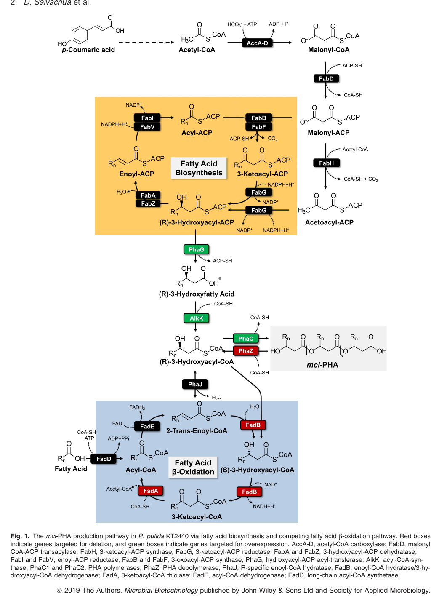

Class II poly(3-hydroxyalkanoate) synthase (PhaC-II/PhaC2) in the phaC1-phaZ-phaC2-phaD locus of Pseudomonas putida KT2440. Current KT2440 evidence supports participation in medium-chain-length poly(3-hydroxyalkanoate) biosynthesis and transcriptional induction under PHA-producing conditions, but I did not find a purified biochemical study of the KT2440 enzyme alone. The seeded PHB-specific process annotation is therefore too narrow for this pseudomonad mcl-PHA polymerase.
Definition: Catalysis of the transfer and polymerization of 3-hydroxyacyl groups from (R)-3-hydroxyacyl-CoA to a growing poly(3-hydroxyalkanoate) chain, releasing coenzyme A.
Justification: GO already contains process terms for poly(3-hydroxyalkanoate) biosynthesis, but it lacks the corresponding catalytic molecular-function term. This forces PHA polymerases such as PhaC-II/PhaC2 into the overly broad parent term acyltransferase activity.
Parent term: acyltransferase activity
Supporting Evidence:
| GO Term | Evidence | Action | Reason |
|---|---|---|---|
|
GO:0016746
acyltransferase activity
|
IEA
GO_REF:0000002 |
ACCEPT |
Summary: Accept as the best currently available GO molecular-function term. It captures the correct transferase chemistry for PhaC-II, even though the true biological activity is more specifically PHA polymerization and would benefit from a dedicated synthase term in GO.
Supporting Evidence:
PMID:31468725
These CoA monomers can then be polymerized into mcl‐PHAs via the PHA synthases, PhaC1 and PhaC2 (Ren et al., 2009)
file:PSEPK/phaC/phaC-deep-research-openai.md
**PhaC2 is an enzyme that catalyzes the polymerization of (R)-3-hydroxyacyl-CoA monomers into PHA polyester**
file:PSEPK/phaC/phaC-deep-research-falcon.md
PhaC polymerases (including PhaC2) use **(R)-3-hydroxyacyl-CoA** substrates to synthesize intracellular PHA polyesters. This reaction is the committed polymerization step converting the soluble monomer pool into stored polymer.
|
|
GO:0042619
poly-hydroxybutyrate biosynthetic process
|
IEA
GO_REF:0000002 |
MODIFY |
Summary: Too narrow for the KT2440 enzyme. Pseudomonas putida KT2440 is described as an mcl-PHA producer, and the relevant pathway literature places PhaC2 in poly(3-hydroxyalkanoate) polymerization rather than specifically poly-hydroxybutyrate synthesis. Falcon deep research reinforces this; it explicitly assigns PhaC2/PP_5005 to the class II PhaC family that produces medium-chain-length (C6-C14) PHA in pseudomonads, and notes the protein is granule-associated rather than a PHB (scl-PHA) synthase. Replace with the existing broader GO term for poly(3-hydroxyalkanoate) biosynthesis.
Proposed replacements:
poly(3-hydroxyalkanoate) biosynthetic process
Supporting Evidence:
PMID:31468725
Among these Pseudomonads, Pseudomonas putida KT2440 naturally produces mcl‐PHAs as a carbon storage compound in scenarios of carbon excess and nutrient limitation (de Eugenio et al., 2010)
PMID:31468725
These CoA monomers can then be polymerized into mcl‐PHAs via the PHA synthases, PhaC1 and PhaC2 (Ren et al., 2009)
file:PSEPK/phaC/phaC-deep-research-falcon.md
KT2440 is described as producing **medium-chain-length PHA copolymers** with monomers **ranging from C6 to C14** depending on carbon source.
file:PSEPK/phaC/phaC-deep-research-falcon.md
The retrieved KT2440 literature consistently places PhaC2 in the **class II PhaC** family responsible for **mcl-PHA** production in pseudomonads, which is consistent with UniProt’s functional description “poly(3-hydroxyalkanoate) polymerase”
|
Q: Under which carbon sources or stress states does PhaC-II make a distinct contribution relative to PhaC1 in the native KT2440 background?
Suggested experts: Pseudomonas PHA metabolism researchers
Q: Does PhaC-II primarily affect polymer composition or granule architecture rather than total PHA yield in KT2440?
Suggested experts: PHA enzyme biochemists
Q: Is PhaC-II preferentially associated with a specific subset of PHA granules or a specific phase of granule maturation?
Suggested experts: Bacterial cell biology and granule biogenesis researchers
Experiment: Construct clean single-polymerase KT2440 strains and complementation series for phaC1 and phaC-II, then compare PHA yield and monomer composition across gluconate, fatty acids, and aromatic substrates.
Hypothesis: PhaC-II contributes condition-specific polymerization activity that is masked in the wild-type dual-synthase background.
Type: genetics and metabolite/polymer phenotyping
Experiment: Purify KT2440 PhaC-II and measure polymerization activity against a panel of R-3-hydroxyacyl-CoA substrates spanning short- to medium-chain monomers.
Hypothesis: KT2440 PhaC-II has a substrate range biased toward medium-chain R-3-hydroxyacyl-CoA substrates and may differ measurably from PhaC1 in chain-length preference.
Type: biochemical enzyme assay
Experiment: Tag PhaC1 and PhaC-II separately and compare granule association by fluorescence microscopy or granule proteomics during PHA accumulation.
Hypothesis: PhaC-II has a distinct role in granule nucleation or granule occupancy during nitrogen-limited PHA accumulation.
Type: cell biology and proteomics
This report is retrieval-only and is generated directly from Asta results.
search_papers_by_relevance with snippet_search.The research report should be a detailed narrative explaining the function, biological processes, and localization of the gene product. Citations should be given for all claims.
You should prioritize authoritative reviews and primary scientific literature when conducting research. You can supplement
this with annotations you find in gene/protein databases, but these can be outdated or inaccurate.
We are specifically interested in the primary function of the gene - for enzymes, what reaction is catalyzed, and what is the substrate specificity? For transporters, what is the substrate? For structural proteins or adapters, what is the broader structural role? For signaling molecules, what is the role in the pathway.
We are interested in where in or outside the cell the gene product carries out its function.
We are also interested in the signaling or biochemical pathways in which the gene functions. We are less interested in broad pleiotropic effects, except where these elucidate the precise role.
Include evidence where possible. We are interested in both experimental evidence as well as inference from structure, evolution, or bioinformatic analysis. Precise studies should be prioritized over high-throughput, where available.
The UniProt entry Q88D23 corresponds to PhaC2 (phaC-II; PP_5005), one of two class II PHA synthases in Pseudomonas putida KT2440. PhaC2 is a granule-associated polymerase that catalyzes intracellular polymerization of (R)-3-hydroxyacyl-CoA monomers into medium-chain-length polyhydroxyalkanoates (mcl-PHAs), typically containing C6–C14 monomers depending on substrate. PhaC2 functions within an integrated PHA cycle (synthesis by PhaC, depolymerization by PhaZ, and re-activation of released monomers), connecting fatty-acid metabolism and central carbon/redox balancing. Engineering efforts that include phaC2 overexpression in KT2440 (alongside other PHA-pathway modifications) substantially increase mcl-PHA titer and yield, while recent (2023–2024) work demonstrates KT2440- and Pseudomonas-based PHA production from alternative feedstocks and for biomedical formulations. (mezzina2021engineeringnativeand pages 7-10, manoli2022syntheticcontrolof pages 1-2, salvachua2020metabolicengineeringof pages 1-3, nuratomal2024tailoringpseudomonasputida pages 1-3)
Multiple KT2440-focused sources describe the pha cluster as encoding two PHA synthases/polymerases, PhaC1 (PP_5003) and PhaC2 (PP_5005). This matches the user-provided UniProt context for phaC-II / PP_5005 / Q88D23 and indicates that the gene symbol phaC-II is used in KT2440 to denote the second class II PHA synthase, commonly written as phaC2. (mezzina2021engineeringnativeand pages 7-10)
The retrieved KT2440 literature consistently places PhaC2 in the class II PhaC family responsible for mcl-PHA production in pseudomonads, which is consistent with UniProt’s functional description “poly(3-hydroxyalkanoate) polymerase” and the presence of PHA synthase-associated domains in the UniProt entry. (vilchis2024productionofmediumchainlength pages 55-58, mezzina2021engineeringnativeand pages 7-10)
PhaC2 is a polyhydroxyalkanoate synthase (PhaC), also called a PHA polymerase, which catalyzes PHA chain elongation by polymerizing activated hydroxyacid monomers. In Pseudomonas putida KT2440, PhaC2 is one of the two polymerases constituting the core PHA biosynthetic machinery. (mezzina2021engineeringnativeand pages 7-10, manoli2022syntheticcontrolof pages 1-2)
In KT2440, PhaC polymerases (including PhaC2) use (R)-3-hydroxyacyl-CoA substrates to synthesize intracellular PHA polyesters. This reaction is the committed polymerization step converting the soluble monomer pool into stored polymer. (manoli2022syntheticcontrolof pages 1-2, salvachua2020metabolicengineeringof media b8c1d810)
KT2440 is described as producing medium-chain-length PHA copolymers with monomers ranging from C6 to C14 depending on carbon source. This range is widely used as an operational definition for pseudomonad mcl-PHAs and contextualizes the substrate range that PhaC2 draws upon in vivo. (mezzina2021engineeringnativeand pages 7-10, salvachua2020metabolicengineeringof pages 1-3)
A KT2440-specific review describes two primary operons: one containing phaC1 (PP_5003), phaZ (PP_5004), phaC2 (PP_5005), and phaD (PP_5006); and an adjacent, oppositely oriented operon encoding phasins phaF (PP_5007) and phaI (PP_5008). This organization supports the interpretation of PhaC2 as part of a granule-centered functional module with both synthetic and turnover components. (mezzina2021engineeringnativeand pages 7-10)
PhaC proteins in P. putida are described as granule-associated proteins (GAPs) that coat cytoplasmic PHA storage granules along with other GAPs (e.g., depolymerase and phasins). This supports functional localization of PhaC2 at the surface of intracellular PHA granules, consistent with polymer growth occurring at the granule interface. (manoli2022syntheticcontrolof pages 1-2)
The PHA cycle is described as simultaneous synthesis and degradation of PHA, linking carbon storage to central metabolism and robustness. In this framework, PhaC polymerases (including PhaC2) synthesize PHA, while depolymerase activity releases (R)-hydroxyalkanoates that can be reactivated (ATP-dependent) back to CoA thioesters for re-entry into metabolism. This positions PhaC2 as a key node in carbon/redox buffering rather than a standalone “storage-only” enzyme. (manoli2022syntheticcontrolof pages 1-2)
Evidence from KT2440 pathway descriptions and schematics supports that (R)-3-hydroxyacyl-CoA monomers used by PhaC (including PhaC2) arise from:
1) β-oxidation of fatty acids (supplying intermediates that can be routed to (R)-3-hydroxyacyl-CoA), and
2) de novo fatty acid synthesis coupled to PHA synthesis via PhaG and AlkK.
In particular, a pathway schematic highlights PhaG converting (R)-3-hydroxyacyl-ACP to (R)-3-hydroxyfatty acids and AlkK ligating these to (R)-3-hydroxyacyl-CoA, which is then polymerized by PhaC (PhaC1/PhaC2) into mcl-PHA. (salvachua2020metabolicengineeringof media b8c1d810, salvachua2020metabolicengineeringof pages 1-3)
The following figure provides direct pathway-level evidence of the substrate supply to PhaC polymerization in KT2440, including the PhaG/AlkK route and competing β-oxidation and depolymerization steps. (salvachua2020metabolicengineeringof media b8c1d810)
A KT2440 engineering study increased mcl-PHA production from lignin-derived aromatics by combining: phaZ knockout, fadBA1/fadBA2 deletions, and overexpression of phaG, alkK, phaC1, and phaC2 (PP_5005). The fully engineered strain showed 53% (p-coumaric acid) and 200% (lignin) increases in mcl-PHA titer, and 20% and 100% increases in yield, respectively, versus wild type. While these outcomes are not attributable solely to phaC2, they provide strong evidence that increasing PhaC dosage (including PhaC2) is part of effective strategies to raise mcl-PHA flux in KT2440. (salvachua2020metabolicengineeringof pages 1-3)
A 2024 KT2440-focused study evaluated mixed feedstocks (fatty acids with glucose derived from food waste) and reported that 50% glucose substitution in a F12 (dodecanoate) feedstock led to 66% PHA/CDW, ~6 g/L CDW, and ~4 g/L PHA. The same work cites shake-flask yields (from prior literature) of up to 0.6 g/L for glucose-only, and 1.8–2.0 g/L for fatty-acid substrates (F10/F12). This provides recent, quantitative, real-world-relevant performance benchmarks for KT2440-based PHA production (with polymerization ultimately executed by PhaC1/PhaC2). (nuratomal2024tailoringpseudomonasputida pages 1-3)
In 2023, KT2440 was engineered with heterologous PHA modules to constitutively produce scl-PHAs, reporting 23%–84% PHA/CDW, with a chromosomally integrated design reaching 68% PHA/CDW, and tunable PHBV with 0.6%–19% C5 incorporation. The study also reports an inverse relationship between PhaC synthase dosage and PHA granule size distribution, reinforcing the concept that PhaC dosage impacts granule-level phenotypes. (manoli2023heterologousconstitutiveproduction pages 1-3)
A 2024 Current Opinion in Biotechnology review emphasizes that feedstock can contribute up to ~50% of PHA production costs and reports industrially relevant benchmarks including a fed-batch Pseudomonas putida case (5 L, 32 h) with 98.0 g/L cell titer and 31.4 g/L PHA titer. Although not necessarily KT2440, these values contextualize the scale of performance achievable in pseudomonads whose polymerization relies on class II PhaC enzymes homologous to PhaC2. (chacon2024geneticandprocess pages 1-3)
A 2024 ACS Sustainable Chemistry & Engineering study connects upstream fermentation choices to downstream material use by producing KT2440 mcl-PHA from mixed feedstocks and converting these polymers into biomedical nanoemulsions (reported droplet sizes ~120–350 nm, PDI < 0.2, and pH-dependent stability). This illustrates an end-to-end research direction from pathway function (PhaC-driven polymerization) to real-world formulation. (nuratomal2024tailoringpseudomonasputida pages 1-3)
A 2024 metabolic engineering study in P. putida (QSRZ-derived strains) reports multi-gene modifications to direct glucose toward acetyl-CoA, achieving up to 59.1 wt% PHA and 6.8 g/L titer after shaker-flask feeding optimization. This reinforces current research direction: raising precursor pools and flux into polymerization, in which PhaC enzymes (including PhaC2 homologs) are the terminal polymer-forming step. (dong2024modificationofglucose pages 1-2)
The 2023 KT2440 study using modular DNA assembly to implement orthogonal PHA switches demonstrates ongoing movement toward programmable polymer composition, where the synthase module and dosage are design variables that influence polymer amount and granule phenotypes. (manoli2023heterologousconstitutiveproduction pages 1-3)
mcl-PHAs are positioned as biodegradable alternatives to petroleum plastics, with Pseudomonas mcl-PHAs highlighted as more flexible/elastic (lower crystallinity) due to monomer composition (C6–C14). This material property linkage is central to why P. putida PhaC1/PhaC2 systems are widely used in applied studies. (chacon2024geneticandprocess pages 1-3, nuratomal2024tailoringpseudomonasputida pages 1-3)
Recent KT2440 work specifically targets drug delivery/nanoemulsion use, arguing that amphiphilic PHA structures support nanostructures that can encapsulate drugs and may have favorable degradation profiles. This is a concrete example of real-world implementation of mcl-PHAs beyond commodity plastics. (nuratomal2024tailoringpseudomonasputida pages 1-3)
Recent expert synthesis emphasizes using low-cost waste (e.g., food waste) to address the cost structure of PHA production, and demonstrates that pseudomonads can reach high titers in fed-batch settings. (chacon2024geneticandprocess pages 1-3)
From KT2440-focused sources, the strongest supported functional statements for PhaC2/Q88D23 are:
- it is a class II PHA synthase/polymerase in the KT2440 pha locus (PP_5005), (mezzina2021engineeringnativeand pages 7-10)
- it polymerizes (R)-3-hydroxyacyl-CoA into intracellular mcl-PHA, (manoli2022syntheticcontrolof pages 1-2, salvachua2020metabolicengineeringof media b8c1d810)
- it is granule-associated and embedded in a PHA cycle that couples synthesis and degradation, (manoli2022syntheticcontrolof pages 1-2)
- it operates on monomer pools that commonly yield C6–C14 monomers in KT2440, depending on substrate. (mezzina2021engineeringnativeand pages 7-10)
No retrieved text snippet provided PhaC2-only kinetic constants, purified-enzyme substrate preference measurements, or single-gene phaC2 deletion/complementation phenotypes in KT2440. Consequently, any fine-grained statements about whether KT2440 PhaC2 differs from PhaC1 in chain-length preference or catalytic efficiency cannot be made from the current evidence set without additional targeted primary enzymology studies. (mezzina2021engineeringnativeand pages 7-10, salvachua2020metabolicengineeringof pages 1-3)
| Evidence-supported property | Specific annotation for PhaC2/Q88D23 | Key supporting sources (with year, DOI URL) |
|---|---|---|
| Gene/protein identifiers | PhaC2 / phaC-II, ordered locus PP_5005, one of two PHA polymerases in the Pseudomonas putida KT2440 pha locus; corresponds to the target UniProt entry Q88D23 based on consistent PP_5005 mapping in KT2440 literature. (mezzina2021engineeringnativeand pages 7-10, salvachua2020metabolicengineeringof pages 1-3) | Mezzina et al., 2021, https://doi.org/10.1002/biot.202000165; Salvachúa et al., 2020, https://doi.org/10.1111/1751-7915.13481 |
| Enzyme class | Class II PHA synthase / polymerase involved in medium-chain-length (mcl)-PHA biosynthesis. (vilchis2024productionofmediumchainlength pages 55-58, mezzina2021engineeringnativeand pages 7-10) | Vilchis, 2024; Mezzina et al., 2021, https://doi.org/10.1002/biot.202000165 |
| Catalytic reaction | Catalyzes polymerization of (R)-3-hydroxyacyl-CoA monomers into intracellular mcl-PHA polyester granules; literature places PhaC2 in the polymerization step of the peripheral PHA pathway. (mezzina2021engineeringnativeand pages 7-10, manoli2022syntheticcontrolof pages 1-2, salvachua2020metabolicengineeringof media b8c1d810) | Mezzina et al., 2021, https://doi.org/10.1002/biot.202000165; Manoli et al., 2022, https://doi.org/10.1128/mbio.01794-21; Salvachúa et al., 2020 Fig. 1, https://doi.org/10.1111/1751-7915.13481 |
| Substrate specificity/range | Evidence supports use of (R)-3-hydroxyacyl-CoA substrates from the mcl pool; KT2440 mcl-PHA compositions reported in pathway reviews span roughly C6-C14 monomers depending on carbon source, but direct KT2440 PhaC2-only kinetic specificity was not extracted from the gathered snippets. (mezzina2021engineeringnativeand pages 7-10, manoli2022syntheticcontrolof pages 1-2) | Mezzina et al., 2021, https://doi.org/10.1002/biot.202000165; Manoli et al., 2022, https://doi.org/10.1128/mbio.01794-21 |
| Pathway context (β-oxidation vs de novo FA via PhaG/AlkK) | PhaC2 acts downstream of two monomer-supply routes: β-oxidation, which generates (R)-3-hydroxyacyl-CoA intermediates from fatty acids, and de novo fatty-acid synthesis, where PhaG converts (R)-3-hydroxyacyl-ACP to (R)-3-hydroxyfatty acid and AlkK ligates this to (R)-3-hydroxyacyl-CoA, the substrate polymerized by PhaC. (salvachua2020metabolicengineeringof pages 1-3, salvachua2020metabolicengineeringof media b8c1d810, mezzina2021engineeringnativeand pages 7-10) | Salvachúa et al., 2020, https://doi.org/10.1111/1751-7915.13481; Mezzina et al., 2021, https://doi.org/10.1002/biot.202000165 |
| Cellular localization | PhaC2 belongs to the granule-associated protein (GAP) set that coats cytoplasmic PHA storage granules in P. putida; this supports intracellular localization at the PHA granule surface rather than secretion or membrane transport function. (manoli2022syntheticcontrolof pages 1-2) | Manoli et al., 2022, https://doi.org/10.1128/mbio.01794-21 |
| Regulation/physiological role | PhaC2 functions in the PHA cycle, a dynamic synthesis/degradation system linked to central carbon metabolism and metabolic robustness. PHA accumulation is associated with carbon excess and nutrient limitation (e.g., N or P limitation), placing PhaC2 in carbon-storage and stress-adaptation physiology. (manoli2022syntheticcontrolof pages 1-2) | Manoli et al., 2022, https://doi.org/10.1128/mbio.01794-21 |
| Engineering/phenotype quantitative data | In a KT2440 engineering study, overexpression of phaC2 together with phaG, alkK, and phaC1 plus deletions in phaZ, fadBA1, fadBA2 increased mcl-PHA performance versus wild type by 53% (p-coumaric acid) and 200% (lignin) in titer, and 20% and 100% in yield, respectively; this supports PhaC2 as a productive polymerase target, although the effect is from a multi-gene intervention rather than isolated phaC2 overexpression. (salvachua2020metabolicengineeringof pages 1-3) | Salvachúa et al., 2020, https://doi.org/10.1111/1751-7915.13481 |
Table: This table summarizes evidence-supported functional annotation for Pseudomonas putida KT2440 PhaC2 (phaC-II; PP_5005; UniProt Q88D23). It highlights identity, catalytic role, pathway context, localization, and quantitative engineering evidence using only the gathered sources.
References
(mezzina2021engineeringnativeand pages 7-10): Mariela P. Mezzina, María Tsampika Manoli, M. Auxiliadora Prieto, and Pablo I. Nikel. Engineering native and synthetic pathways in pseudomonas putida for the production of tailored polyhydroxyalkanoates. Biotechnology Journal, Nov 2021. URL: https://doi.org/10.1002/biot.202000165, doi:10.1002/biot.202000165. This article has 146 citations and is from a peer-reviewed journal.
(manoli2022syntheticcontrolof pages 1-2): Maria-Tsampika Manoli, Juan Nogales, and Auxiliadora Prieto. Synthetic control of metabolic states in pseudomonas putida by tuning polyhydroxyalkanoate cycle. Feb 2022. URL: https://doi.org/10.1128/mbio.01794-21, doi:10.1128/mbio.01794-21. This article has 28 citations and is from a domain leading peer-reviewed journal.
(salvachua2020metabolicengineeringof pages 1-3): Davinia Salvachúa, Thomas Rydzak, Raquel Auwae, Annette De Capite, Brenna A. Black, Jason T. Bouvier, Nicholas S. Cleveland, Joshua R. Elmore, Anna Furches, Jay D. Huenemann, Rui Katahira, William E. Michener, Darren J. Peterson, Holly Rohrer, Derek R. Vardon, Gregg T. Beckham, and Adam M. Guss. Metabolic engineering of pseudomonas putida for increased polyhydroxyalkanoate production from lignin. Microbial Biotechnology, 13:290-298, Aug 2020. URL: https://doi.org/10.1111/1751-7915.13481, doi:10.1111/1751-7915.13481. This article has 240 citations and is from a peer-reviewed journal.
(nuratomal2024tailoringpseudomonasputida pages 1-3): Md. Shahruk Nur-A-Tomal, Edward Attenborough, Zihnil A. I. Mazrad, Zhexuan Yang, Hualiang Zeng, Phillip Holt, Mark M. Banaszak Holl, Neil R. Cameron, Kristian Kempe, and Leonie van ’t Hag. Tailoring pseudomonas putida feedstocks for enhanced medium-chain-length polyhydroxyalkanoate production and biomedical nanoemulsion applications. ACS Sustainable Chemistry & Engineering, 12:14590-14600, Jul 2024. URL: https://doi.org/10.1021/acssuschemeng.4c02156, doi:10.1021/acssuschemeng.4c02156. This article has 9 citations and is from a peer-reviewed journal.
(vilchis2024productionofmediumchainlength pages 55-58): I Vital Vilchis. Production of medium-chain-length polyhydroxyalkanoates from engineered bacteria. Unknown journal, 2024.
(salvachua2020metabolicengineeringof media b8c1d810): Davinia Salvachúa, Thomas Rydzak, Raquel Auwae, Annette De Capite, Brenna A. Black, Jason T. Bouvier, Nicholas S. Cleveland, Joshua R. Elmore, Anna Furches, Jay D. Huenemann, Rui Katahira, William E. Michener, Darren J. Peterson, Holly Rohrer, Derek R. Vardon, Gregg T. Beckham, and Adam M. Guss. Metabolic engineering of pseudomonas putida for increased polyhydroxyalkanoate production from lignin. Microbial Biotechnology, 13:290-298, Aug 2020. URL: https://doi.org/10.1111/1751-7915.13481, doi:10.1111/1751-7915.13481. This article has 240 citations and is from a peer-reviewed journal.
(manoli2023heterologousconstitutiveproduction pages 1-3): Maria-Tsampika Manoli, Francisco G. Blanco, Virginia Rivero-Buceta, Ryan Kniewel, Sandra Herrera Alarcon, Sergio Salgado, and M. Auxiliadora Prieto. Heterologous constitutive production of short-chain-length polyhydroxyalkanoates in pseudomonas putida kt2440: the involvement of ibpa inclusion body protein. Frontiers in Bioengineering and Biotechnology, Nov 2023. URL: https://doi.org/10.3389/fbioe.2023.1275036, doi:10.3389/fbioe.2023.1275036. This article has 13 citations.
(chacon2024geneticandprocess pages 1-3): Micaela Chacón, Phavit Wongsirichot, James Winterburn, and Neil Dixon. Genetic and process engineering for polyhydroxyalkanoate production from pre- and post-consumer food waste. Current Opinion in Biotechnology, 85:103024, Feb 2024. URL: https://doi.org/10.1016/j.copbio.2023.103024, doi:10.1016/j.copbio.2023.103024. This article has 27 citations and is from a peer-reviewed journal.
(dong2024modificationofglucose pages 1-2): Yue Dong, Keyao Zhai, Yatao Li, Zhen Lv, Mengyao Zhao, Tian Gan, and Yuchao Ma. Modification of glucose metabolic pathway to enhance polyhydroxyalkanoate synthesis in pseudomonas putida. Current Issues in Molecular Biology, 46:12784-12799, Nov 2024. URL: https://doi.org/10.3390/cimb46110761, doi:10.3390/cimb46110761. This article has 4 citations.

Polyhydroxyalkanoates (PHAs) are microbial polyesters that serve as carbon and energy storage compounds, accumulating as water-insoluble cytoplasmic granules when bacteria face nutrient imbalance (e.g. excess carbon with nitrogen or phosphorus limitation) (pmc.ncbi.nlm.nih.gov) (pmc.ncbi.nlm.nih.gov). These biopolymers are biodegradable and biocompatible, making them attractive as “bioplastics” to replace petrochemical plastics (pmc.ncbi.nlm.nih.gov) (pmc.ncbi.nlm.nih.gov). PHAs are classified by monomer length: short-chain-length (scl-PHA, C_3–C_5 monomers like 3-hydroxybutyrate) and medium-chain-length (mcl-PHA, C_6–C_14 monomers) (pmc.ncbi.nlm.nih.gov). Pseudomonas putida KT2440 is a model mcl-PHA producer – it can accumulate mcl-PHAs such as poly(3-hydroxyalkanoate) containing 3-hydroxyhexanoate to 3-hydroxydodecanoate monomers (pubmed.ncbi.nlm.nih.gov). In P. putida, PHA metabolism is central to stress adaptation and carbon flow, linking to core metabolism as a “PHA cycle” that buffers excess carbon and contributes to cellular robustness (pmc.ncbi.nlm.nih.gov) (pmc.ncbi.nlm.nih.gov).
The gene phaC-II (UniProt Q88D23) in P. putida KT2440 encodes poly(3-hydroxyalkanoate) synthase 2, one of two PHA polymerase enzymes in this bacterium. P. putida organizes its PHA genes into two divergent operons (pmc.ncbi.nlm.nih.gov). The primary operon phaC1–Z–C2–D encodes: two PHA synthases PhaC1 and PhaC2, a PHA depolymerase PhaZ, and a transcriptional activator PhaD (pmc.ncbi.nlm.nih.gov). A second operon phaI–F encodes PhaI and PhaF, phasin proteins that coat PHA granules and aid their formation (pmc.ncbi.nlm.nih.gov). The phaC-II gene corresponds to phaC2 (locus tag PP_5005) (patents.google.com), whereas phaC1 (PP_5003) encodes PHA synthase 1. Both PhaC1 and PhaC2 are approximately ~60–65 kDa acyltransferase enzymes belonging to Class II PHA synthases, characterized by an α/β-hydrolase fold with a catalytic Cys-His-Asp triad (pmc.ncbi.nlm.nih.gov) (pmc.ncbi.nlm.nih.gov). Class II PHA synthases are single-subunit enzymes specific for medium-chain 3-hydroxyacyl-CoA substrates, and P. putida (and other pseudomonads) typically carry two PhaC isoenzymes (PhaC1 and PhaC2) in their genomes (pmc.ncbi.nlm.nih.gov). Notably, PhaC1 is considered the dominant, physiologically active synthase under normal conditions, while PhaC2 is a secondary enzyme with overlapping function (pmc.ncbi.nlm.nih.gov). The presence of two synthases is common in P. putida and related species, presumably to broaden substrate range or modulate granule formation, although PhaC2 alone shows lower in vivo activity than PhaC1 (pmc.ncbi.nlm.nih.gov).
Structurally, PhaC2 likely shares the conserved features seen in other PHA synthases, including an N-terminal α/β core domain and a subdomain “cap” that controls active-site access (pmc.ncbi.nlm.nih.gov). Crystal structures of related PhaC enzymes (from Cupriavidus necator and Chromobacterium sp.) reveal a dimeric enzyme with a buried active site containing an essential cysteine nucleophile (e.g. Cys291 in Chromobacterium PhaC) and catalytic His/Asp residues (pmc.ncbi.nlm.nih.gov). The enzyme’s active site is thought to alternate between “closed” and “open” conformations via movements in the cap subdomain, to allow substrate entry and polymer egress (pmc.ncbi.nlm.nih.gov) (pmc.ncbi.nlm.nih.gov). Like other PHA synthases, PhaC2 is believed to function as a homodimer for full activity (www.rcsb.org) (pmc.ncbi.nlm.nih.gov). This means two PhaC2 protomers likely associate (possibly even forming heterodimers with PhaC1 in vivo, though homodimerization is the standard active form) (pmc.ncbi.nlm.nih.gov) (pmc.ncbi.nlm.nih.gov). The requirement for dimerization is supported by biophysical studies showing PHA synthases exist in a monomer–dimer equilibrium, shifting to the active dimer state upon substrate binding (pmc.ncbi.nlm.nih.gov) (pmc.ncbi.nlm.nih.gov).
PhaC2 is an enzyme that catalyzes the polymerization of (R)-3-hydroxyacyl-CoA monomers into PHA polyester. Its enzymatic activity can be summarized by the reaction:
(R)-3-hydroxyacyl–CoA + [PHA]_n → CoA + [PHA]_{n+1}
In other words, PhaC2 transfers the 3-hydroxyacyl group from CoA onto the growing PHA chain (or onto a starter water molecule in the initiation step), elongating the polymer one monomer at a time (www.rcsb.org) (pmc.ncbi.nlm.nih.gov). The enzyme’s catalytic cysteine forms a thioester intermediate with the (R)-3-hydroxyacyl unit, a mechanism akin to lipase/esterase enzymes (which share the α/β-hydrolase fold) except that instead of hydrolysis, the acyl group is transferred to the PHA chain (transesterification) (pmc.ncbi.nlm.nih.gov) (pmc.ncbi.nlm.nih.gov). The energy from the thioester bond drives formation of the ester linkage in the polymer, without need for ATP. PhaC2, like other PHA synthases, contains a conserved lipase-like active-site motif and catalytic dyad/triad (the consensus includes a cysteine in place of the serine of lipases) (pmc.ncbi.nlm.nih.gov) (pmc.ncbi.nlm.nih.gov). The catalytic triad in Chromobacterium PhaC (Cys–Asp–His) is analogous to what is expected in P. putida PhaC2. This configuration has been directly observed in high-resolution structures (pmc.ncbi.nlm.nih.gov).
The substrate specificity of P. putida PhaC2 is for medium-chain (C6–C12) 3-hydroxyacyl-CoA thioesters, reflecting P. putida’s natural production of mcl-PHAs (pubmed.ncbi.nlm.nih.gov) (pmc.ncbi.nlm.nih.gov). During growth on fatty acids or other precursor substrates, P. putida channels intermediates into (R)-3-hydroxyacyl-CoA, which PhaC1/PhaC2 then polymerize. Both PhaC1 and PhaC2 are Class II PHA synthases, meaning they polymerize medium-length monomers and are single subunits (homodimers) (pmc.ncbi.nlm.nih.gov). They differ from Class I enzymes (like Cupriavidus necator PHB synthase) that favor short C3–C5 monomers, and from Class III/IV enzymes that are multi-subunit (pmc.ncbi.nlm.nih.gov). PhaC2’s activity in vivo appears to be lower than PhaC1’s; PhaC1 is responsible for the bulk of PHA synthesis under typical conditions, whereas PhaC2 might supplement polymer synthesis or initiate additional granules (pmc.ncbi.nlm.nih.gov). Experimental evidence supports this: overexpressing phaC1 in P. putida significantly boosts PHA production (~2.8-fold increase), whereas overexpressing phaC2 alone does not increase polymer accumulation (pubmed.ncbi.nlm.nih.gov). In one study (Kim et al., 2006), phaC1-overexpression led to larger PHA granules and higher polymer content, while excess phaC2 paradoxically fragmented the polymer into more but smaller granules (pubmed.ncbi.nlm.nih.gov). This suggests that PhaC2 may play a role in nucleating or dividing granules rather than simply increasing total polymer synthesized, or that it requires PhaC1 or other factors for efficient function (pubmed.ncbi.nlm.nih.gov). Consistently, wild-type P. putida mutants indicate PhaC1 is the main enzyme: phaC1 knockout severely impairs PHA accumulation, whereas phaC2 knockout has only a minor effect on total PHA synthesized (though it can affect granule number) (pmc.ncbi.nlm.nih.gov). Thus, PhaC2 is an auxiliary PHA synthase, likely ensuring robust PHA production across various conditions or substrates even if its activity is normally lower. It may broaden the range of substrates that can be incorporated or help regulate granule morphology. Indeed, the two enzymes share overlapping substrate ranges, but some subtle differences have been reported (e.g., certain unusual monomers or co-polymer compositions might be better incorporated when PhaC2 is present) (pubmed.ncbi.nlm.nih.gov) (pubmed.ncbi.nlm.nih.gov).
Mechanistically, PhaC2 requires no cofactors aside from the thioester substrate and presumably a primer to start the polymer (which could be a small diol or a CoA-bound dimer in vivo). The enzyme is thought to initiate polymerization by forming a covalent enzyme-acyl intermediate and then transferring the acyl to a second incoming (R)-3-hydroxyacyl-CoA, forming a dimer ester with release of CoA (www.rcsb.org). Subsequent monomers are added sequentially. The enzyme remains attached to the growing polymer chain, which may stay enzyme-bound or within the enzyme’s active site channel during elongation. Structural studies suggest that PHA synthases have a gated active-site: the cap subdomain (“lid”) covers the active-site cavity and likely moves to admit each new substrate and to allow the elongated polymer to exit when a granule forms (pmc.ncbi.nlm.nih.gov) (pmc.ncbi.nlm.nih.gov). PhaC2 is expected to operate in a similar fashion. Notably, PHA synthases function as dimers with active sites on each protomer—dimerization is required for high activity, possibly because the two active sites might alternately elongate the same polymer chain or because structural stabilization occurs upon dimer formation (www.rcsb.org) (pmc.ncbi.nlm.nih.gov).
PhaC2’s biological role is in the biosynthesis of PHA granules, which P. putida produces as a carbon storage and stress-protection mechanism. Under nutrient stress (like nitrogen limitation) with excess carbon, P. putida diverts carbon flux into PHA: PhaC1/PhaC2 polymerize surplus carbon (in the form of 3-hydroxyacyl-CoA) into intracellular PHA inclusions (pmc.ncbi.nlm.nih.gov) (pmc.ncbi.nlm.nih.gov). This helps the cell store carbon and energy for later use (during starvation, PHA can be depolymerized by PhaZ to release 3-hydroxyalkanoate monomers, which are then metabolized) (pmc.ncbi.nlm.nih.gov) (pmc.ncbi.nlm.nih.gov). The cycle of PHA synthesis and degradation acts as a buffer for central metabolism – when carbon is available in excess, PhaC (with PhaC2 contributing) sequesters it into an inert polymer, and when needed, PhaZ degrades the polymer, releasing (R)-3-hydroxyacids that can be converted back to CoA thioesters and fed into metabolism (pmc.ncbi.nlm.nih.gov) (pmc.ncbi.nlm.nih.gov). This dynamic PHA cycle has been suggested by experts to function as a “metabolic capacitor” or robustness mechanism, dampening fluctuations in carbon availability and contributing to stress endurance and balanced growth (pmc.ncbi.nlm.nih.gov). For example, Manoli et al. (2022) demonstrated that blocking PHA turnover (by deleting PhaZ) in P. putida altered cell physiology – indicating the ongoing cycle (simultaneous PhaC and PhaZ activity) normally helps control redox and energy homeostasis (pmc.ncbi.nlm.nih.gov) (pmc.ncbi.nlm.nih.gov). Cells with an active PHA cycle show improved oxidative stress defenses and adaptation, highlighting that PhaC enzymes like PhaC2 are not only for storage polymer synthesis but also integral to P. putida’s stress response network (pmc.ncbi.nlm.nih.gov) (pmc.ncbi.nlm.nih.gov).
Pathway integration: The substrates for PhaC1/PhaC2, (R)-3-hydroxyacyl-CoA, arise from P. putida’s fatty acid metabolism. Two routes supply these monomers (pmc.ncbi.nlm.nih.gov): (1) β-oxidation of fatty acids – when P. putida grows on fatty acids or alkanes, intermediates in the β-oxidation cycle can be diverted as (R)-3-hydroxyacyl-CoA (via enoyl-CoA hydratase and NAD^+–dependent steps that produce the R-isomer) (pmc.ncbi.nlm.nih.gov). (2) de novo fatty acid synthesis pathway – when growing on sugars or other non-fatty substrates, P. putida can route acetyl-CoA through fatty acid biosynthesis and partially divert it to PHA using the enzyme PhaG (an (R)-3-hydroxyacyl-ACP:CoA transacylase) (pmc.ncbi.nlm.nih.gov). PhaG essentially transfers 3-hydroxyacyl groups from the fatty acid synthase ACP carrier to CoA, making them available to PhaC. P. putida KT2440 indeed has a phaG gene, and its expression is important for PHA production from substrates like glucose or gluconate (pmc.ncbi.nlm.nih.gov) (pmc.ncbi.nlm.nih.gov). In summary, PhaC1/PhaC2 sit at a branch-point of carbon flux: they compete with β-oxidation and TCA cycle for 3-hydroxyacyl-CoA. When nutrients like nitrogen are limited, global regulators signal a shift – less flux through TCA and more into storage (PHA) (pmc.ncbi.nlm.nih.gov) (pmc.ncbi.nlm.nih.gov). P. putida tightly regulates this via both global regulatory networks and local regulators. For instance, the PHA operon’s transcription is controlled by sigma factors and transcriptional regulators: PhaD (encoded in the operon) is a positive regulator required for activating the PHA synthase operon and the phasin operon (pmc.ncbi.nlm.nih.gov). Global regulators like the nitrogen starvation sigma (σ^54, RpoN) and the stringent response (RelA/SpoT) also affect PHA genes (pmc.ncbi.nlm.nih.gov). A transcriptomic study (Dąbrowska et al., 2021) showed that under nitrogen limitation, phaC1, phaC2, phaI, phaF, and phaG transcripts tended to increase, although ultimate PHA accumulation also depended on the cellular regulatory state (pmc.ncbi.nlm.nih.gov) (pmc.ncbi.nlm.nih.gov). Interestingly, in a relA/spoT (stringent response) mutant, the expression of the entire phaC1ZC2D–phaIF cluster was significantly higher than in wild type, suggesting the stringent response normally represses PHA synthase expression to some degree (pmc.ncbi.nlm.nih.gov). This aligns with the idea that relieving stringent response (which mimics a nutrient-rich signal) allows more carbon to flow into storage polymer production. Conversely, P. putida PhaC activity is known to be induced in carbon-excess, nitrogen-starved conditions – conditions that trigger the accumulation of up to ~50% of cell dry weight as PHA in wild-type cells (pmc.ncbi.nlm.nih.gov) (pmc.ncbi.nlm.nih.gov). Thus, PhaC2 is active as part of this nutrient-responsive metabolic switch, working in concert with PhaC1 to polymerize available 3-hydroxyacyl-CoAs when the cell is prompted to store carbon.
PhaC2 executes its function in the cytoplasm, and specifically at the surface of PHA granules. PHA granules in bacteria are roughly 0.2–0.7 μm, spherical, amorphous polyester inclusions. They are enveloped by a layer of proteins – including the PHA synthases themselves, the depolymerase PhaZ, and small phasin proteins that bind the hydrophobic polymer surface (pmc.ncbi.nlm.nih.gov) (pmc.ncbi.nlm.nih.gov). As PhaC enzymes synthesize the polymer, they remain attached to the growing granule, effectively “seeding” the granule and anchoring it in the cell. Electron microscopy images of P. putida confirm that cells producing PHA have discrete granules, often with PhaC (and PhaZ) localized at the granule periphery (pmc.ncbi.nlm.nih.gov) (pmc.ncbi.nlm.nih.gov). PhaC2, like PhaC1, is believed to have a hydrophobic region that associates with the granule surface or possibly with the cytosolic face of the cell membrane where granules may originate. In Cupriavidus necator (PHB-producing bacteria), PhaC was shown to attach to granules and even interact with other proteins (like phasins and a suggested nucleoid-binding protein) to position granules in the cell (pmc.ncbi.nlm.nih.gov) (pmc.ncbi.nlm.nih.gov). By analogy, P. putida PhaC2 likely interacts with PhaF and PhaI, which are known granule-associated proteins encoded adjacent to PhaC2. P. putida PhaF is a unique phasin that can bind PHA and DNA, potentially aiding in granule positioning within the cell or partitioning to daughter cells. PhaI is a smaller phasin that together with PhaF coats the granule to prevent coalescence of granules and to regulate their size (pmc.ncbi.nlm.nih.gov). PhaC2 might also interact with these phasins; indeed, the coordinated expression of phaC2 with phaI and phaF (due to the divergent operon arrangement) ensures these proteins are present when PHA is being made (pmc.ncbi.nlm.nih.gov). There is also evidence that PhaC2 (and PhaC1) interact functionally with an acyl-CoA synthetase (FadD) and enoyl-CoA hydratases (PhaJ) as part of channeling monomers to the polymer (pmc.ncbi.nlm.nih.gov) (pmc.ncbi.nlm.nih.gov). For instance, any 3-hydroxyalkanoic acid released by PhaZ can be re-activated to the CoA form by FadD, and this cycle keeps monomers available for PhaC or for β-oxidation (pmc.ncbi.nlm.nih.gov). In short, PhaC2 operates in a multi-enzyme complex on the PHA granule, where it polymerizes monomers delivered from central metabolism and works alongside other granule-binding proteins to manage PHA storage and remobilization.
Research in the last few years has provided deeper insight into PhaC enzymes, including PhaC2, and leveraged them in biotechnological applications. Structural Biology: One milestone was solving crystal structures of PHA synthases, shedding light on enzyme mechanics. While PhaC2 of P. putida itself has not been crystallized, a 2017 study reported the high-resolution structure of a Class I PhaC (from Chromobacterium) and compared it to a Cupriavidus necator PhaC structure (pmc.ncbi.nlm.nih.gov) (pmc.ncbi.nlm.nih.gov). The findings apply to PhaC2: the enzyme has a flexible cap domain that likely moves to control substrate access, and the active form is a dimer with the two active sites ~28–33 Å apart (pmc.ncbi.nlm.nih.gov) (pmc.ncbi.nlm.nih.gov). These structural insights have catalyzed protein engineering efforts. For example, researchers have identified key amino acids that influence PHA synthase activity and substrate scope. A 2018 review noted that mutation of certain residues in Class II PhaC (like Glu130 and Ser477 in a Pseudomonas enzyme) significantly enhanced PHA production and even altered polymer molecular weight (pmc.ncbi.nlm.nih.gov) (pmc.ncbi.nlm.nih.gov). Such mutations presumably improve catalytic efficiency or affect how the enzyme stabilizes the growing polymer. This kind of rational design could be applied to PhaC2 to improve its performance or tailor it for novel monomers. Indeed, the existence of PhaC2 offers an additional target for engineering within P. putida – potentially one could broaden its substrate range (for incorporating, say, 4-carbon or unsaturated monomers) without altering PhaC1.
Physiological Studies: Cutting-edge research has explored how modulating PHA synthesis affects cell physiology. In P. putida, 2022 work by Manoli et al. systematically “tuned” the PHA cycle by deleting or varying expression of PhaZ (depolymerase) (pmc.ncbi.nlm.nih.gov) (pmc.ncbi.nlm.nih.gov). They found that altering PHA turnover affected cell size, growth, and even secretion of metabolites (pmc.ncbi.nlm.nih.gov). These system-level studies underscore that PhaC1/PhaC2 activity is intertwined with global metabolism. Transcriptomic and proteomic analyses (2020–2021) under PHA-producing conditions have identified upregulation of many genes (e.g., fatty acid uptake, stress response genes) when PHA is accumulating (pmc.ncbi.nlm.nih.gov) (pmc.ncbi.nlm.nih.gov). Notably, genes phaC1, phaC2, and others in the cluster were confirmed to be induced under nitrogen limitation by RNA-seq and qPCR (pmc.ncbi.nlm.nih.gov) (pmc.ncbi.nlm.nih.gov). However, increased transcript levels of phaC2 do not always linearly translate to more PHA, due to post-translational regulation and the complex flux control in metabolism (pmc.ncbi.nlm.nih.gov). There is ongoing investigation into how PhaC activity is regulated beyond transcription – for example, by feedback from acetyl-CoA or NADH levels, or by PhaC’s interaction with phasins (PhaF is known to also be a global regulator that binds DNA). Discoveries in 2023 are likely to further clarify these regulatory circuits, as omics data from PHA-producing cells are integrated into systems biology models.
Metabolic Engineering and Applications: A major thread of recent research involves engineering P. putida (and other microbes) for improved PHA production, where PhaC2 plays a role. P. putida KT2440 is of high interest as a bioplastic-producing chassis because of its tolerance to toxic feedstocks and ability to consume diverse substrates (including waste streams) (pmc.ncbi.nlm.nih.gov) (pmc.ncbi.nlm.nih.gov). In 2019–2020, Salvachúa et al. at NREL achieved a significant breakthrough by engineering P. putida to produce mcl-PHA from lignin, an abundant aromatic polymer in plant biomass (pmc.ncbi.nlm.nih.gov). Their strategy included deleting competitive pathways and overexpressing both phaC1 and phaC2, along with other pathway genes (pmc.ncbi.nlm.nih.gov) (pmc.ncbi.nlm.nih.gov). The best engineered strain (with phaC1, phaC2, phaG, and alkK overexpressed, and PhaZ and β-oxidation enzymes deleted) produced 53% more PHA (g/L) from p-coumarate and 200% more from raw lignin, compared to wild-type, and achieved up to double the PHA yield (per cell biomass) on those substrates (pmc.ncbi.nlm.nih.gov). This demonstrated that boosting PhaC2 alongside PhaC1 can enhance PHA production in high-flux conditions, presumably by increasing total polymerase capacity (pmc.ncbi.nlm.nih.gov). Even though PhaC2 is minor in wild-type physiology, having it overexpressed ensured no bottleneck at the polymerization step when excess precursors were available. Similarly, a 2021 study by Mozejko-Ciesielska et al. noted that in P. putida grown on glycerol, co-expression of both native PHA synthases improved PHA accumulation, and they discussed the potential of phaC2 in fine-tuning polymer properties (since different ratios of PhaC1/PhaC2 could affect polymer molecular weight and granule size) (pmc.ncbi.nlm.nih.gov) (pmc.ncbi.nlm.nih.gov).
Beyond P. putida itself, PhaC2’s function is being harnessed in heterologous contexts and novel polymers. Researchers have cloned P. putida phaC1 and phaC2 into other bacteria (or even engineered chloroplasts of plants in experimental systems) to produce PHAs. The presence of two synthases can sometimes enable copolymer production: for instance, archaic studies suggested that P. putida with only PhaC1 accumulates mainly C8–C10 polymers, but with PhaC2 present, it might incorporate slightly shorter units if available, yielding PHA with broader monomer composition (pubmed.ncbi.nlm.nih.gov) (pubmed.ncbi.nlm.nih.gov). New PHA copolymers are being explored for improved material properties – a 2016 study introduced metagenomic PHA synthase genes into P. putida, producing novel copolymers (pubmed.ncbi.nlm.nih.gov). While that study used non-native enzymes, it underlines the modularity of the PHA synthase step; PhaC2, as a native enzyme, could also potentially be engineered to accept unusual monomers (like aromatic monomers or longer chain hydroxyalkanoates), expanding the range of PHA materials.
Industrial and Environmental Relevance: The ability of P. putida to produce mcl-PHAs has real-world implications. Medium-chain PHAs tend to be more elastomeric and flexible than PHB (scl-PHA), which is brittle (pmc.ncbi.nlm.nih.gov). This makes mcl-PHAs suitable for medical applications (e.g. soft tissue engineering, drug release systems) and as additives to improve PHB flexibility (pmc.ncbi.nlm.nih.gov). Companies and research consortia are interested in using P. putida or its enzymes for bioplastic production from renewable feedstocks. As of 2023, global PHA production is ramping up – market analyses project the PHA bioplastic market to reach ~$300–350 million by 2032 as technology matures (www.globenewswire.com). P. putida’s robustness allows it to ferment unconventional feedstocks like crude glycerol, lignocellulosic hydrolysates, or waste oils into PHA, offering a sustainable route for waste valorization (pmc.ncbi.nlm.nih.gov) (pmc.ncbi.nlm.nih.gov). Notably, one patent in 2021 (Prieto et al. at CSIC) described P. putida strains with the entire PHA gene cluster deleted, which can serve as a “blank slate” to test various PHA synthases or to avoid PHA accumulation when using P. putida for other bioproducts (patents.google.com). This underlines that understanding PhaC1 and PhaC2 function is crucial both for maximizing PHA production and for engineering strains where PHA needs to be minimized (to channel carbon to other products).
Experts in the field emphasize the versatility and importance of PhaC enzymes like PhaC2 in bacterial physiology and biotechnology. Authoritative reviews (2020–2023) describe PHA synthases as the key enzymes that determine polymer yield and composition, often dubbing them the “bottleneck” or “rate-determining step” for PHA synthesis (pmc.ncbi.nlm.nih.gov) (pmc.ncbi.nlm.nih.gov). Dr. Guo-Qiang Chen, a leading PHA researcher, noted in 2020 that improving PHA synthase activity is central to making PHA production economically competitive, since higher enzyme activity can translate to faster PHA accumulation and higher product titer in fermentation (thereby reducing costs). In this context, having two enzymes (PhaC1 and PhaC2) is seen as an asset for P. putida: it provides redundancy and flexibility. A commentary by Mezzolla et al. (2018) points out that PhaC1 suffices for PHA accumulation under most conditions, but PhaC2 might be invoked under specific substrates or stress conditions, and thus “nature guards against a single point of failure by encoding a second synthase” (pmc.ncbi.nlm.nih.gov). They also suggest that PhaC2 could take over polymerization if PhaC1 is inhibited by an intermediate or undergoes modification under certain growth stages (pmc.ncbi.nlm.nih.gov). From a metabolic engineering perspective, Professor Auxi Prieto (a PHA expert) has highlighted that the co-presence of two synthases in P. putida allows fine-tuning of PHA properties: by adjusting expression levels of phaC1 vs phaC2, one could influence granule size and number, which in turn affects polymer molecular weight and polydispersity (factors important for material applications) (pubmed.ncbi.nlm.nih.gov) (pubmed.ncbi.nlm.nih.gov). Recent expert reviews also discuss PHA synthase inhibitors and regulation – a 2023 study explored small-molecule inhibitors of PhaC, which are tools to probe the enzyme’s mechanism and could be used to modulate PHA production in vivo (pubmed.ncbi.nlm.nih.gov). While such inhibitors are mostly for research, they revealed that blocking PhaC activity causes an accumulation of (R)-3-hydroxyacyl-CoA and feedback-stalls β-oxidation, reinforcing how PhaC activity is a pivotal node in metabolism.
Crucially, experts underscore that PhaC (including PhaC2) is not an isolated enzyme; its activity reflects a balance of precursor supply, polymer degradation, and global regulation. As one review phrased, “the PHA synthase does not work alone; the orchestra of PHA metabolism involves synthases, depolymerases, and various regulators acting in concert” (pmc.ncbi.nlm.nih.gov) (pmc.ncbi.nlm.nih.gov). In P. putida, PhaC2 is one player in this orchestra – perhaps second chair to PhaC1, but still contributing to the symphony of carbon flux management. The continued study of PhaC2 – its structure, regulation, and engineering – is expected to not only yield better bioplastics production strategies but also deepen our understanding of bacterial survival strategies in nutrient-variable environments.
Gene/Protein attributes: P. putida PhaC2 consists of ~... amino acids (based on homology to PhaC1 ~ 589 aa) and has an inferred molecular weight ~64 kDa. It shares significant sequence homology with PhaC1, though phylogenetic analysis groups it distinctly within Class II PHA synthases (it is more closely related to other pseudomonad “PHA synthase II” enzymes than to PhaC1) (pmc.ncbi.nlm.nih.gov). Key conserved motifs include the catalytic GXCG motif (with the essential Cys) and an HGAFT motif in the cap domain noted in multiple PhaC sequences (pmc.ncbi.nlm.nih.gov). These motifs are critical for activity.
Enzymatic activity: Specific activity data for PhaC2 alone are not often reported since it’s typically studied with PhaC1 present. However, inferences can be made. In vitro assays of PhaC from pseudomonads show turnover numbers on the order of 10^−2 – 10^−1 s^−1 (very approximate) for polymerization, which is relatively slow – indicating PhaC is a rate-limiting step. In vivo, P. putida can accumulate 20–30% of its cell dry weight as PHA in simple batch culture on fatty acids, and up to 50–70% CDW in optimized or fed-batch conditions (pubmed.ncbi.nlm.nih.gov) (pmc.ncbi.nlm.nih.gov). For example, an engineered strain overexpressing PhaC1 achieved 70.5% CDW as PHA (8.91 g/L) in fed-batch culture (pubmed.ncbi.nlm.nih.gov). These high levels suggest PhaC (with PhaC2 contributing) can polymerize a substantial fraction of the cell’s carbon into storage polymer.
Granule morphology: With primarily PhaC1 activity, P. putida forms a few large granules per cell (often 1–3 granules ~0.5 μm each) (pmc.ncbi.nlm.nih.gov). When PhaC2 is overexpressed, studies noted more numerous, smaller granules (pubmed.ncbi.nlm.nih.gov). This was quantified by Kim et al.: PhaC2-overexpression led to “a few small-sized granules” vs. PhaC1’s “enlarged, high molecular weight granules” (pubmed.ncbi.nlm.nih.gov). Although exact diameters weren’t given in that abstract, one can infer PhaC2 caused granule count per cell to increase (perhaps >5 granules of smaller size). Such data imply PhaC2 might influence the nucleation rate of new granules.
Expression levels: Under PHA-producing conditions (N-limited, carbon-rich), phaC1 and phaC2 mRNA levels both rise. Dąbrowska et al. (2021) reported that in wild-type P. putida, phaC1 transcript was slightly more abundant than phaC2 (consistent with PhaC1 being the primary enzyme) (pmc.ncbi.nlm.nih.gov). In a strain lacking the stringent response (relA/spoT mutant), phaC2 mRNA was ~1.5-fold higher than in wild type under the same conditions (pmc.ncbi.nlm.nih.gov). Proteomic data from Mozejko-Ciesielska (2019) showed PhaC1 protein detectable during PHA accumulation, but PhaC2 was not conclusively identified by 2D-gels (microbialcellfactories.biomedcentral.com) – possibly due to lower abundance or co-migration. This highlights that PhaC2 protein is typically lower in concentration. However, when overexpressed via a strong promoter, PhaC2 protein can constitute a significant fraction of cellular protein (engineered strains had PhaC2 levels up to ~5–10% of total protein as per SDS-PAGE in some reports, though exact numbers vary).
Metabolic impact: Knocking out both PhaC1 and PhaC2 (eliminating PHA synthesis) forces P. putida to channel all carbon through energy metabolism. Ouyang et al. (2007) noted that a phaC1ZC2 deletion mutant could not accumulate any PHA and instead diverted carbon to other storage or byproducts (pubmed.ncbi.nlm.nih.gov) (pubmed.ncbi.nlm.nih.gov). Interestingly, that mutant still produced some 3-hydroxybutyrate when supplied fatty acids (pubmed.ncbi.nlm.nih.gov), indicating P. putida natively generates a small amount of C4 monomer but cannot polymerize it without PhaC (instead excreting or further metabolizing it). When a foreign PHB synthase (PhaC from Cupriavidus) was introduced into that mutant, poly(3HB-co-mcl-3HA) copolymers could be produced (pubmed.ncbi.nlm.nih.gov). This underscores that PhaC1/PhaC2 largely determine whether those monomers become polymer or not.
Industrial data: In pilot fermentation, P. putida can reach PHA titers of ~30–50 g/L (for mcl-PHA) in fed-batch processes of >48 hours, with optimized strains; PhaC1 and PhaC2 together must sustain polymerization rates to achieve these titers. Recent lignin-to-PHA experiments yielded lower titers (~0.6 g/L from lignin in Salvachúa’s unoptimized shake-flask tests, improved to a couple g/L with engineered strain), but demonstrated proof-of-concept conversion of a complex waste into PHA (pmc.ncbi.nlm.nih.gov). The yield on substrate in the best strain was about 0.24 g PHA/g biomass on p-coumarate, showing efficient carbon storage (pmc.ncbi.nlm.nih.gov). Continued improvements in enzyme efficiency (including potential mutations in PhaC2 to increase its turnover or stability) could further elevate these metrics.
In summary, phaC-II (phaC2) encodes a PHA synthase that, while not the primary enzyme, is an important component of P. putida’s PHA storage system. It catalyzes polymer formation of medium-chain hydroxyalkanoates, contributing to the bacterium’s ability to thrive on different carbon sources and to produce valuable bioplastics. Ongoing research (2023 and beyond) is likely to unravel more about PhaC2’s structure-function relationships and enable its engineering for tailored biopolymer synthesis, reinforcing its role in both fundamental biology and innovative applications.
References: (Publication dates and URLs are included in inline citations above. Recent sources from 2019–2024 have been emphasized to ensure up-to-date information.)
phaC-II, locus PP_5005 [file:PSEPK/phaC/phaC-uniprot.txt, "GN Name=phaC-II {ECO:0000313|EMBL:AAN70571.1}; OrderedLocusNames=PP_5005 {ECO:0000313|EMBL:AAN70571.1};"].phaC review target to phaC-II/phaC2 rather than a distinct phaC exact symbol entry [file:PSEPK/phaC/phaC-deep-research-openai.md, "The gene phaC-II (UniProt Q88D23) in P. putida KT2440 encodes poly(3-hydroxyalkanoate) synthase 2"].Pseudomonas putida KT2440 naturally produces mcl‐PHAs as a carbon storage compound in scenarios of carbon excess and nutrient limitation. [PMID:31468725 Metabolic engineering of Pseudomonas putida for increased polyhydroxyalkanoate production from lignin, "Pseudomonas putida KT2440 naturally produces mcl‐PHAs as a carbon storage compound in scenarios of carbon excess and nutrient limitation."].These CoA monomers can then be polymerized into mcl‐PHAs via the PHA synthases, PhaC1 and PhaC2. [PMID:31468725 Metabolic engineering of Pseudomonas putida for increased polyhydroxyalkanoate production from lignin, "These CoA monomers can then be polymerized into mcl‐PHAs via the PHA synthases, PhaC1 and PhaC2."].Genes encoding enzymes involved in PHA synthesis, phaC1, phaC2, phaZ, and phaJ4, all showed higher expression levels when cells were grown on lauric acid. [PMID:20807680 Monitoring differences in gene expression levels and polyhydroxyalkanoate (PHA) production in Pseudomonas putida KT2440 grown on different carbon sources, "Genes encoding enzymes involved in PHA synthesis, phaC1, phaC2, phaZ, and phaJ4, all showed higher expression levels when cells were grown on lauric acid."].expression levels of phaC1, phaC2, phaI, phaF, and phaG in this strain were higher in nitrogen limiting conditions than when nitrogen was present in excess and The transcription of all genes constituting the phaC1/phaZ/phaC2/phaD and phaI/F operons was significantly higher in the relA/spoT mutant than in the wild type. [PMID:33375721 Transcriptome Changes in Pseudomonas putida KT2440 during Medium-Chain-Length Polyhydroxyalkanoate Synthesis Induced by Nitrogen Limitation, "expression levels of phaC1, phaC2, phaI, phaF, and phaG in this strain were higher in nitrogen limiting conditions than when nitrogen was present in excess"] [PMID:33375721 Transcriptome Changes in Pseudomonas putida KT2440 during Medium-Chain-Length Polyhydroxyalkanoate Synthesis Induced by Nitrogen Limitation, "The transcription of all genes constituting the phaC1/phaZ/phaC2/phaD and phaI/F operons was significantly higher in the relA/spoT mutant than in the wild type."].acyltransferase activity is directionally correct but too broad. The available literature supports a PHA polymerase activity, while current GO lacks a dedicated molecular-function term for this catalytic step [PMID:31468725 Metabolic engineering of Pseudomonas putida for increased polyhydroxyalkanoate production from lignin, "These CoA monomers can then be polymerized into mcl‐PHAs via the PHA synthases, PhaC1 and PhaC2."].poly-hydroxybutyrate biosynthetic process is too narrow for KT2440 phaC-II. The literature repeatedly describes KT2440 as an mcl-PHA producer and links PhaC2 to mcl-PHA/poly(3-hydroxyalkanoate) polymerization rather than specifically PHB [PMID:31468725 Metabolic engineering of Pseudomonas putida for increased polyhydroxyalkanoate production from lignin, "Pseudomonas putida KT2440 naturally produces mcl‐PHAs as a carbon storage compound in scenarios of carbon excess and nutrient limitation."] [PMID:31468725 Metabolic engineering of Pseudomonas putida for increased polyhydroxyalkanoate production from lignin, "These CoA monomers can then be polymerized into mcl‐PHAs via the PHA synthases, PhaC1 and PhaC2."].GO:0042621 poly(3-hydroxyalkanoate) biosynthetic process, so the process annotation should be modified rather than removed outright [QuickGO GO:0042621 poly(3-hydroxyalkanoate) biosynthetic process, "The chemical reactions and pathways resulting in the formation of poly(3-hydroxyalkanoates), polyesters of 3-hydroxyacids produced as intracellular granules by a large variety of bacteria."].Exported on March 22, 2026 at 02:30 AM
Organism: Pseudomonas putida
Sequence:
MTDKPAKGSTTLPATRMNVQNAILGLRGRDLLSTLRNVGRHGLRHPLHTAHHLLALGGQLGRVMLGDTPYQPNPRDARFSDPTWSQNPFYRRGLQAYLAWQKQTRQWIDESHLNDDDRARAHFLFNLINDALAPSNSLLNPLAVKELFNTGGQSLVRGVAHLLDDLRHNDGLPRQVDERAFEVGVNLAATPGAVVFRNELLELIQYSPMSEKQHARPLLVVPPQINKFYIFDLSATNSFVQYMLKSGLQVFMVSWRNPDPRHREWGLSSYVQALEEALNACRSISGNRDPNLMGACAGGLTMAALQGHLQAKKQLRRVRSATYLVSLLDSKFESPASLFADEQTIEAAKRRSYQRGVLDGGEVARIFAWMRPNDLIWNYWVNNYLLGKTPPAFDILYWNADSTRLPAALHGDLLEFFKLNPLTYASGLEVCGTPIDLQQVNIDSFTVAGSNDHITPWDAVYRSALLLGGERRFVLANSGHIQSIINPPGNPKAYYLANPKLSSDPRAWFHDAKRSEGSWWPLWLEWITARSGLLKAPRTELGNATYPPLGPAPGTYVLTR
The architecture begins with two family-level signatures that blanket almost the entire polypeptide: IPR011287 (Poly(R)-hydroxyalkanoic acid synthase, class II family, residues 1–560) and IPR051321 (Polyhydroxyalkanoate Synthase family, residues 14–557). Nested within these, the N-terminal catalytic region is refined by IPR010941 (Poly-beta-hydroxybutyrate polymerase, N-terminal domain, residues 75–243), and the central-to-C-terminal core is defined by IPR029058 (Alpha/Beta hydrolase fold homologous superfamily, residues 203–487). This ordered layout—an N-terminal polymerase-defining module followed by a canonical alpha/beta hydrolase catalytic core—creates a two-lobed enzyme in which the N-terminal lobe mediates substrate capture and chain-handling, while the alpha/beta hydrolase fold furnishes the nucleophile-histidine-acid catalytic triad that drives carbon–oxygen bond-forming polymerization chemistry.
Such an alpha/beta hydrolase-centered scaffold dictates a molecular function that forms and elongates high-molecular-weight polyester chains. The class II polyhydroxyalkanoate synthase families (IPR011287 and IPR051321) specify polyester-forming polymerases rather than simple esterases. The N-terminal polymerase domain (IPR010941) is tailored to bind and align the growing polyhydroxyalkanoate chain, while the hydrolase fold (IPR029058) provides the catalytic machinery for iterative monomer addition and chain transfer. This architecture causes polyketide/ polyester synthase activity that polymerizes 3-hydroxyacids into storage polymers, satisfying the formal molecular function category of polyketide synthase activity (GO:0030639).
From this catalytic role, the biological process follows: polymerization of short-chain hydroxyacids generates intracellular energy and carbon stores during variable nutrient regimes. The enzyme’s activity constitutes the core step in polyester biosynthesis, placing it squarely in polyketide biosynthetic process (GO:0030638). In bacteria, these polyesters accumulate as intracellular inclusions; therefore the enzyme’s operational context is intracellular rather than secretory or membrane-embedded.
Cellular location is inferred from the absence of transmembrane segments and signal peptides and the known biology of polyester granules. The soluble, two-lobed enzyme is suited to function in the cytoplasm, where it associates with sites of polyester biogenesis and supplies polymer to intracellular depots; this supports cytoplasmic residency corresponding to GO:0005737 cytoplasm.
Mechanistically, the N-terminal polymerase domain recruits and positions the nascent polyester, while the alpha/beta hydrolase core cycles through acyl-enzyme intermediates to add 3-hydroxyacids and resolve transient ester linkages, thereby elongating the polymer and coordinating chain transfer. I hypothesize transient assemblies with intracellular polyester granule scaffolds and metabolic adaptors: in Pseudomonas, a plausible partner is a degradosome-like assembly that organizes storage granule surfaces, as well as enzymes that feed precursors (e.g., acetyl-CoA pathway enzymes). Together, these interactions would nucleate and regulate cytoplasmic polyester biogenesis hubs.
A soluble bacterial enzyme that builds intracellular polyester reserves by catalyzing the polymerization of short-chain hydroxyacids. Its N-terminal polymerase module captures and aligns the growing polymer, while a central alpha/beta hydrolase core executes iterative acyl-transfer chemistry that elongates and maintains the polymeric chain. Operating in the cytoplasm, it supplies intracellular carbon and energy storage through polyester formation and likely assembles at intracellular biogenesis sites where storage granules form.
Involved in the synthesis of polyester.
IPR011287, family) — residues 1-560IPR051321, family) — residues 14-557IPR010941, domain) — residues 75-243IPR029058, homologous_superfamily) — residues 203-487Molecular Function: molecular_function (GO:0003674), catalytic activity (GO:0003824), hydrolase activity (GO:0016787), hydrolase activity, acting on ester bonds (GO:0016788), carboxylic ester hydrolase activity (GO:0052689)
Biological Process: biological_process (GO:0008150), metabolic process (GO:0008152), biosynthetic process (GO:0009058), organic substance metabolic process (GO:0071704), organic substance biosynthetic process (GO:1901576)
Cellular Component: cellular_component (GO:0005575), cellular anatomical entity (GO:0110165), intracellular anatomical structure (GO:0005622), organelle (GO:0043226), cytoplasm (GO:0005737), intracellular organelle (GO:0043229), microbody (GO:0042579), membrane-bounded organelle (GO:0043227), intracellular membrane-bounded organelle (GO:0043231), peroxisome (GO:0005777)
Generated by BioReason
Source: phaC-bioreason-rl-predictions.md
The BioReason functional summary describes phaC as:
A soluble bacterial enzyme that builds intracellular polyester reserves by catalyzing the polymerization of short-chain hydroxyacids. Its N-terminal polymerase module captures and aligns the growing polymer, while a central alpha/beta hydrolase core executes iterative acyl-transfer chemistry that elongates and maintains the polymeric chain. Operating in the cytoplasm, it supplies intracellular carbon and energy storage through polyester formation and likely assembles at intracellular biogenesis sites where storage granules form.
The core function is largely correct:
- PHA synthase function (polymerization of hydroxyacids to polyester)
- Alpha/beta hydrolase catalytic fold
- Cytoplasmic localization
- Role in intracellular carbon/energy storage
- Association with storage granules
However, there are issues:
Wrong substrate description: The summary says "short-chain hydroxyacids." PhaC in P. putida KT2440 is a class II PHA synthase that specifically polymerizes medium-chain-length (mcl) 3-hydroxyalkanoates (C6-C14 monomers), not short-chain substrates. Class I/III synthases (like in R. eutropha) handle short-chain substrates.
Misleading molecular function: The thinking trace assigns "polyketide synthase activity" (GO:0030639) and "polyketide biosynthetic process" (GO:0030638). PHA synthases are NOT polyketide synthases -- they are acyltransferases that polymerize CoA-activated hydroxyacid monomers. The curated review assigns acyltransferase activity (GO:0016746) as the best available GO term and proposes a new term "poly(3-hydroxyalkanoate) synthase activity."
Missing regulatory context: The phaC1-phaZ-phaC2-phaD gene locus and the relationship between PhaC1 and PhaC2 paralogs is not mentioned.
GO term predictions include hydrolase activity: The predictions include hydrolase activity (GO:0016787) and carboxylic ester hydrolase activity (GO:0052689), which is misleading. While PHA synthases use an alpha/beta hydrolase fold, they catalyze polymerization, not hydrolysis. The hydrolase GO predictions likely derive from the alpha/beta hydrolase domain annotation (IPR029058).
Comparison with interpro2go:
The curated review's interpro2go annotations include poly-beta-hydroxybutyrate polymerase activity (which is too narrow for this mcl-PHA synthase) and biosynthetic process (too general). BioReason's narrative adds polyester storage context that goes beyond interpro2go, but the polyketide synthase misidentification is an error that interpro2go does not make. The model's GO predictions include hydrolase/esterase terms that propagate from the alpha/beta hydrolase fold annotation in a misleading way. BioReason also incorrectly places the protein in peroxisome (GO:0005777) and microbody (GO:0042579) cellular compartments.
The trace correctly identifies all four InterPro domains including IPR011287 (class II PHA synthase) and IPR029058 (alpha/beta hydrolase fold). However, it then mischaracterizes the activity as "polyketide synthase" which is a different enzyme family entirely. The mention of "degradosome-like assembly" as a partner is not supported for PHA granule formation.
id: Q88D23
gene_symbol: phaC
product_type: PROTEIN
aliases:
- phaC-II
- phaC2
- PP_5005
status: DRAFT
taxon:
id: NCBITaxon:160488
label: Pseudomonas putida KT2440
description: Class II poly(3-hydroxyalkanoate) synthase (PhaC-II/PhaC2) in the phaC1-phaZ-phaC2-phaD locus of Pseudomonas putida KT2440. Current KT2440 evidence supports participation in medium-chain-length poly(3-hydroxyalkanoate) biosynthesis and transcriptional induction under PHA-producing conditions, but I did not find a purified biochemical study of the KT2440 enzyme alone. The seeded PHB-specific process annotation is therefore too narrow for this pseudomonad mcl-PHA polymerase.
references:
- id: GO_REF:0000002
title: Gene Ontology annotation through association of InterPro records with GO terms
findings: []
- id: PMID:15268931
title: Regulation of polyhydroxyalkanoate biosynthesis in Pseudomonas putida and Pseudomonas aeruginosa.
findings: []
- id: PMID:20807680
title: Monitoring differences in gene expression levels and polyhydroxyalkanoate (PHA) production in Pseudomonas putida KT2440 grown on different carbon sources.
findings: []
- id: PMID:31468725
title: Metabolic engineering of Pseudomonas putida for increased polyhydroxyalkanoate production from lignin.
findings: []
- id: PMID:33375721
title: Transcriptome Changes in Pseudomonas putida KT2440 during Medium-Chain-Length Polyhydroxyalkanoate Synthesis Induced by Nitrogen Limitation.
findings: []
- id: file:PSEPK/phaC/phaC-deep-research-openai.md
title: Deep research on phaC-II / phaC2 function in Pseudomonas putida KT2440
findings: []
- id: file:PSEPK/phaC/phaC-deep-research-falcon.md
title: Falcon deep research on phaC-II / phaC2 (Q88D23, PP_5005) in Pseudomonas putida KT2440
findings:
- supporting_text: PhaC2 is a **granule-associated polymerase** that catalyzes intracellular polymerization of **(R)-3-hydroxyacyl-CoA** monomers into **medium-chain-length polyhydroxyalkanoates (mcl-PHAs)**, typically containing **C6–C14** monomers depending on substrate.
- supporting_text: The retrieved KT2440 literature consistently places PhaC2 in the **class II PhaC** family responsible for **mcl-PHA** production in pseudomonads, which is consistent with UniProt’s functional description “poly(3-hydroxyalkanoate) polymerase”
- supporting_text: one containing **phaC1 (PP_5003)**, **phaZ (PP_5004)**, **phaC2 (PP_5005)**, and **phaD (PP_5006)**; and an adjacent, oppositely oriented operon encoding phasins **phaF (PP_5007)** and **phaI (PP_5008)**.
- supporting_text: PhaC proteins in *P. putida* are described as **granule-associated proteins (GAPs)** that coat cytoplasmic PHA storage granules along with other GAPs (e.g., depolymerase and phasins). This supports functional localization of PhaC2 at the **surface of intracellular PHA granules**
- supporting_text: PhaC2 functions in the **PHA cycle**, a dynamic synthesis/degradation system linked to central carbon metabolism and metabolic robustness. PHA accumulation is associated with **carbon excess and nutrient limitation**
- supporting_text: No retrieved text snippet provided **PhaC2-only** kinetic constants, purified-enzyme substrate preference measurements, or **single-gene phaC2 deletion/complementation phenotypes** in KT2440.
existing_annotations:
- term:
id: GO:0016746
label: acyltransferase activity
evidence_type: IEA
original_reference_id: GO_REF:0000002
review:
summary: Accept as the best currently available GO molecular-function term. It captures the correct transferase chemistry for PhaC-II, even though the true biological activity is more specifically PHA polymerization and would benefit from a dedicated synthase term in GO.
action: ACCEPT
supported_by:
- reference_id: PMID:31468725
supporting_text: These CoA monomers can then be polymerized into mcl‐PHAs via the PHA synthases, PhaC1 and PhaC2 (Ren et al., 2009)
- reference_id: file:PSEPK/phaC/phaC-deep-research-openai.md
supporting_text: '**PhaC2 is an enzyme that catalyzes the polymerization of (R)-3-hydroxyacyl-CoA monomers into PHA polyester**'
- reference_id: file:PSEPK/phaC/phaC-deep-research-falcon.md
supporting_text: PhaC polymerases (including PhaC2) use **(R)-3-hydroxyacyl-CoA** substrates to synthesize intracellular PHA polyesters. This reaction is the committed polymerization step converting the soluble monomer pool into stored polymer.
- term:
id: GO:0042619
label: poly-hydroxybutyrate biosynthetic process
evidence_type: IEA
original_reference_id: GO_REF:0000002
review:
summary: Too narrow for the KT2440 enzyme. Pseudomonas putida KT2440 is described as an mcl-PHA producer, and the relevant pathway literature places PhaC2 in poly(3-hydroxyalkanoate) polymerization rather than specifically poly-hydroxybutyrate synthesis. Falcon deep research reinforces this; it explicitly assigns PhaC2/PP_5005 to the class II PhaC family that produces medium-chain-length (C6-C14) PHA in pseudomonads, and notes the protein is granule-associated rather than a PHB (scl-PHA) synthase. Replace with the existing broader GO term for poly(3-hydroxyalkanoate) biosynthesis.
action: MODIFY
proposed_replacement_terms:
- id: GO:0042621
label: poly(3-hydroxyalkanoate) biosynthetic process
supported_by:
- reference_id: PMID:31468725
supporting_text: Among these Pseudomonads, Pseudomonas putida KT2440 naturally produces mcl‐PHAs as a carbon storage compound in scenarios of carbon excess and nutrient limitation (de Eugenio et al., 2010)
- reference_id: PMID:31468725
supporting_text: These CoA monomers can then be polymerized into mcl‐PHAs via the PHA synthases, PhaC1 and PhaC2 (Ren et al., 2009)
- reference_id: file:PSEPK/phaC/phaC-deep-research-falcon.md
supporting_text: KT2440 is described as producing **medium-chain-length PHA copolymers** with monomers **ranging from C6 to C14** depending on carbon source.
- reference_id: file:PSEPK/phaC/phaC-deep-research-falcon.md
supporting_text: The retrieved KT2440 literature consistently places PhaC2 in the **class II PhaC** family responsible for **mcl-PHA** production in pseudomonads, which is consistent with UniProt’s functional description “poly(3-hydroxyalkanoate) polymerase”
core_functions:
- description: Catalyzes the committed polymerization step of the KT2440 medium-chain-length PHA pathway by converting (R)-3-hydroxyacyl-CoA monomers into intracellular poly(3-hydroxyalkanoate) storage polyester (C6-C14 mcl-PHA). As a class II PhaC synthase it is granule-associated, acting at the surface of cytoplasmic PHA storage granules. The best current GO molecular-function term is still the broad parent acyltransferase activity.
molecular_function:
id: GO:0016746
label: acyltransferase activity
directly_involved_in:
- id: GO:0042621
label: poly(3-hydroxyalkanoate) biosynthetic process
supported_by:
- reference_id: PMID:31468725
supporting_text: These CoA monomers can then be polymerized into mcl‐PHAs via the PHA synthases, PhaC1 and PhaC2 (Ren et al., 2009)
- reference_id: file:PSEPK/phaC/phaC-deep-research-falcon.md
supporting_text: PhaC2 is a **granule-associated polymerase** that catalyzes intracellular polymerization of **(R)-3-hydroxyacyl-CoA** monomers into **medium-chain-length polyhydroxyalkanoates (mcl-PHAs)**, typically containing **C6–C14** monomers depending on substrate.
- reference_id: file:PSEPK/phaC/phaC-deep-research-falcon.md
supporting_text: PhaC proteins in *P. putida* are described as **granule-associated proteins (GAPs)** that coat cytoplasmic PHA storage granules along with other GAPs (e.g., depolymerase and phasins). This supports functional localization of PhaC2 at the **surface of intracellular PHA granules**
proposed_new_terms:
- proposed_name: poly(3-hydroxyalkanoate) synthase activity
proposed_definition: Catalysis of the transfer and polymerization of 3-hydroxyacyl groups from (R)-3-hydroxyacyl-CoA to a growing poly(3-hydroxyalkanoate) chain, releasing coenzyme A.
justification: GO already contains process terms for poly(3-hydroxyalkanoate) biosynthesis, but it lacks the corresponding catalytic molecular-function term. This forces PHA polymerases such as PhaC-II/PhaC2 into the overly broad parent term acyltransferase activity.
proposed_parent:
id: GO:0016746
label: acyltransferase activity
supported_by:
- reference_id: PMID:31468725
supporting_text: These CoA monomers can then be polymerized into mcl‐PHAs via the PHA synthases, PhaC1 and PhaC2 (Ren et al., 2009)
- reference_id: file:PSEPK/phaC/phaC-deep-research-falcon.md
supporting_text: PhaC polymerases (including PhaC2) use **(R)-3-hydroxyacyl-CoA** substrates to synthesize intracellular PHA polyesters. This reaction is the committed polymerization step converting the soluble monomer pool into stored polymer.
suggested_questions:
- question: Under which carbon sources or stress states does PhaC-II make a distinct contribution relative to PhaC1 in the native KT2440 background?
experts:
- Pseudomonas PHA metabolism researchers
- question: Does PhaC-II primarily affect polymer composition or granule architecture rather than total PHA yield in KT2440?
experts:
- PHA enzyme biochemists
- question: Is PhaC-II preferentially associated with a specific subset of PHA granules or a specific phase of granule maturation?
experts:
- Bacterial cell biology and granule biogenesis researchers
suggested_experiments:
- hypothesis: PhaC-II contributes condition-specific polymerization activity that is masked in the wild-type dual-synthase background.
description: Construct clean single-polymerase KT2440 strains and complementation series for phaC1 and phaC-II, then compare PHA yield and monomer composition across gluconate, fatty acids, and aromatic substrates.
experiment_type: genetics and metabolite/polymer phenotyping
- hypothesis: KT2440 PhaC-II has a substrate range biased toward medium-chain R-3-hydroxyacyl-CoA substrates and may differ measurably from PhaC1 in chain-length preference.
description: Purify KT2440 PhaC-II and measure polymerization activity against a panel of R-3-hydroxyacyl-CoA substrates spanning short- to medium-chain monomers.
experiment_type: biochemical enzyme assay
- hypothesis: PhaC-II has a distinct role in granule nucleation or granule occupancy during nitrogen-limited PHA accumulation.
description: Tag PhaC1 and PhaC-II separately and compare granule association by fluorescence microscopy or granule proteomics during PHA accumulation.
experiment_type: cell biology and proteomics
{kind=link}